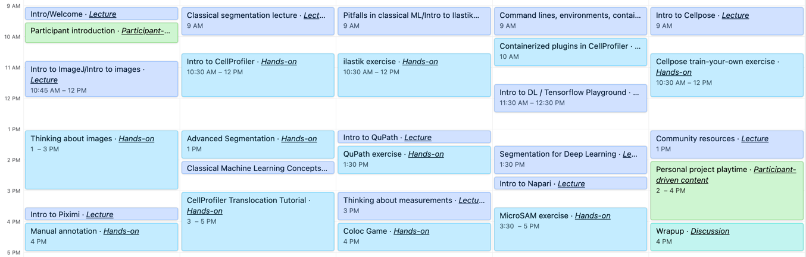

Welcome to BAB3#
We hope you enjoy this year’s course! This book will populate with more content over the next week.
Here is our agenda for the week!
{kind=link}
Please note - while we know many excellent commercial software options exist, we have chosen to focus on open-source free tools that you can access at home without any paid software license. Bioimage analysis has a tremendously large, friendly, and robust community for making such software tools - you can explore many such tools (or just post, “here’s my picture, here’s my question, what is the right tool to use?”) at the Scientific Community Image Forum - https://forum.image.sc . Some tools are best for large data (where “large” is many voxels, like lightsheet), some are best for large data (where “large” is many small images from something like a plate-scanning microscope); some are best for creating reusable, reproducible pipelines, and some best for interactive exploration.
If you find the possible number of tools to start from overwhelming, you aren’t alone! We have curated some recommendations in the Bioimaging Guide that we think you may find helpful. Certainly also reading the manual for a given tool is a great way to learn more! By the end of this week, you will hopefully be confident in assessing a tool and seeing if it might fit your needs or not.
Labs and Exercises
Additional Resources